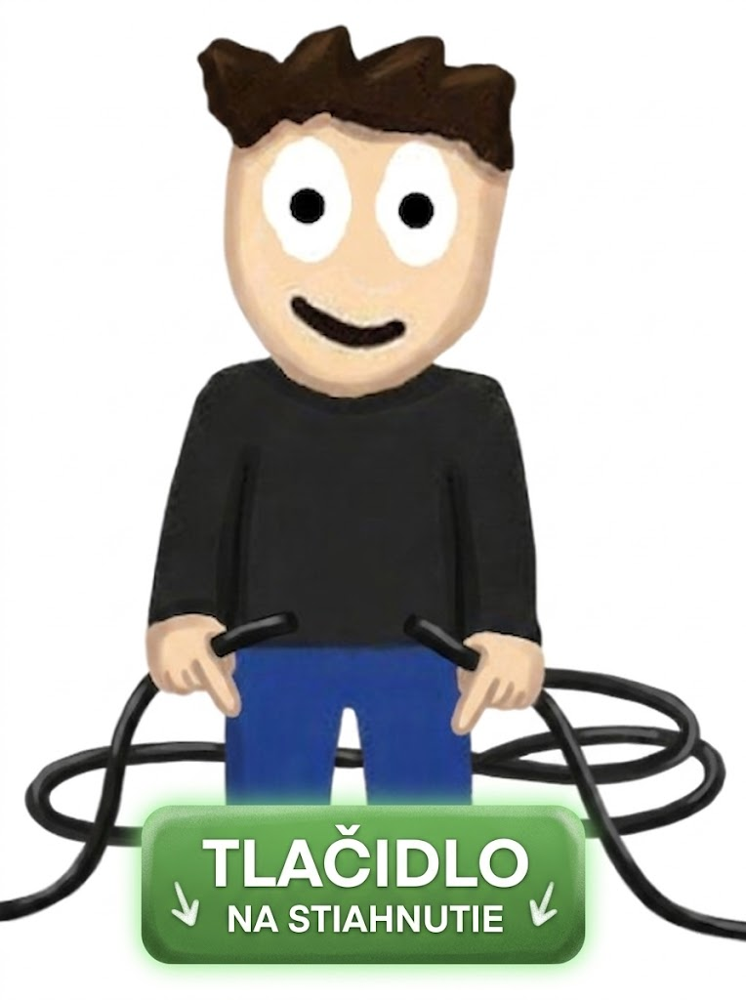

CS:CO
Classic Offensive ModCounter-Strike: Classic Offensive je modifikácia, ktorá má modely a zvuky zo starej 1.6 verzie, beží na CS:GO Source Engine. Vychutnaj si pôvodné modely zbraní, zvuky a ikonické mapy bez žiadnych skinov.Len čistá Nostalgia
📥 STIAHNUŤ ZIP (7.2 GB)Hráči, ktorí navštívili túto stránku: